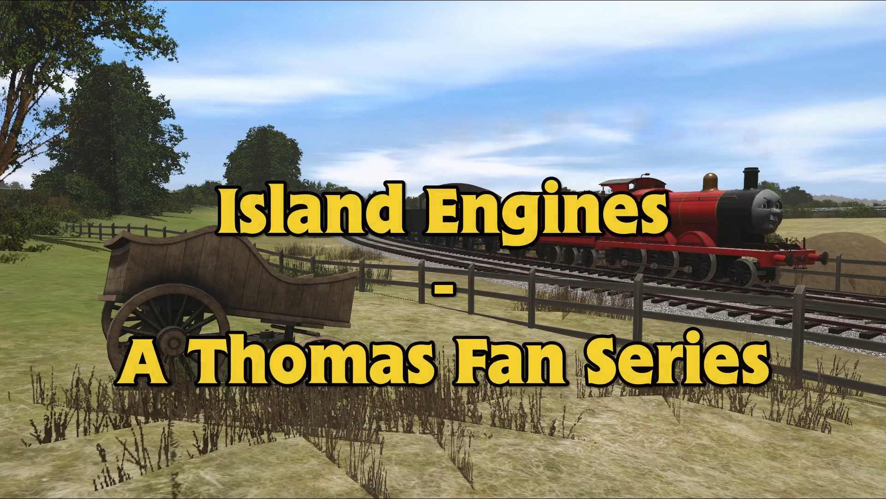

WELCOME TO
ISLAND ENGINES
An Original Sodor Fan Series • Filmed in Trainz Railroad Simulator 2022
🎬 Newest Release
The premiere episode of Island Engines is currently rendering.

SEASON 1 • EPISODE 1
🎬 In Production / Rendering
Slippery Rails
📍 Brendam Docks → The Main Line → The Old Hill Loop
On a cold, rain-lashed night at Brendam Docks, Henry is tasked with taking the heavy Flying Kipper fish train. Ignoring Thomas's warnings about slick rails and falsely claiming his sandboxes are full, Henry plunges into the storm—only to find himself stranded on the steep, overgrown hill line...
⭐ Production Hub & Resources
Select a section from the directory below or use the top menu.
Episode Guide
Explore Season 1 episodes, detailed plot synopses, cast lists, and an interactive 1080p production stills gallery.
Other Great Sites
A curated directory of 20 community 3D modellers, route creators, and classic Trainz workshops with live search.
Trainz Fixer & Tools
Download our safe, non-destructive Trainz Universal Asset Fixer v1.0 and future episode reskin packages.
Video Credits Catalog
Comprehensive database of 6,100+ community 3D assets, routes, and Milo the Otter orchestral music tracks with KUIDs.